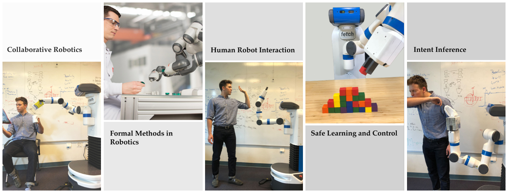

CS 333: Safe and Interactive Robotics
Fall 2018-2019, Class: Tue, Thu 1:30-2:50pm, School of Education 334

Description:
As the field of robotics is quickly emerging, one critical and challenging subject is ensuring that robotic systems can work safely with humans. This course covers a diverse set of topics that focus on addressing the most critical aspects of building interactive and safe autonomous systems. Students will practice essential research skills including critiquing papers, debating, reviewing, writing project proposals, and presenting ideas effectively.
Format:
The course is a combination of lecture and reading sessions. The lectures discuss the fundamentals of motion planning, formal methods applied in robotics, learning from demonstration, intent inference, and shared control required for modeling and design of safe and interactive autonomy for human-robot systems. During the reading sessions, students present and discuss recent contributions in this area. Throughout the semester, each student works on a related research project that they present at the end of the semester.
Prerequisites:
There are no official prerequisites, but an introductory course in artificial intelligence and robotics is recommended.
Learning Objectives:
At the end of this course you will have gained knowledge about applications of various topics in designing safe and interactive autonomous systems: temporal logics, reactive synthesis, planning and control, learning and human modeling, game theoretical foundations of interactive systems, safe learning, etc.
You will also have hands-on experience working on a research project and it is expected that you will gain the following research skills: analyzing literature related to a particular topic, critiquing papers, and presentation of research ideas.
Staff

Timeline
| Date | Lecture | Handouts / Deadlines | Notes |
|---|---|---|---|
| Week 1 Tue, Sep 25 |
LectureIntroduction to Safe and Interactive Robotics |
Template for Scribes
Survey Slides |
|
| Week 1 Thu, Sep 27 |
Lecture Motion Planning |
|
-, -
Notes |
| Week 2 Tue, Oct 02 |
Lecture Trajectory Optimization | -, -
Notes |
|
| Week 2 Thu, Oct 04 |
Lecture Trajectory Optimization + Task and Motion Planning |
|
-, -
Notes |
| Week 3 Tue, Oct 9 |
Reading Task and Motion Planning |
|
P1 Pros: Erdem, Cons: TBD P2 Pros: Shushman, Cons: TBD |
| Week 3 Thu, Oct 11 |
Lecture Learning from Demonstration |
|
-, - |
| Week 4 Tue, Oct 16 |
Lecture Learning from Demonstration |
|
|
| Week 4 Thu, Oct 18 |
Reading LfD + Preference based Learning |
Project Proposal Reports Due
|
P1 Pros: TBD, Cons: TBD P2 Pros: TBD, Cons: TBD |
| Week 5 Tue, Oct 23 |
Project Proposal Presentations | ||
| Week 5 Thu, Oct 25 |
Reading Safe Learning |
|
P1 Pros: TBD, Cons: TBD P2 Pros: TBD, Cons: TBD |
| Week 6 Tue, Oct 30 |
Lecture Guest Lecture | TBD | |
| Week 6 Thu, Nov 01 |
Lecture Guest Lecture | TBD | |
| Week 7 Tue, Nov 06 |
Reading Intent Inference |
|
P1 Pros: TBD, Cons: TBD P2 Pros: TBD, Cons: TBD |
| Week 7 Tue, Nov 08 |
Reading Shared Control | P1 Pros: TBD, Cons: TBD P2 Pros: TBD, Cons: TBD |
|
| Week 8 Tue, Nov 13 |
Reading Communication and Coordination |
|
P1 Pros: TBD, Cons: TBD P2 Pros: TBD, Cons: TBD |
| Week 8 Thu, Nov 15 |
Reading Collaboration | Project Milestone Reviews Due
|
P1 Pros: TBD, Cons: TBD P2 Pros: TBD, Cons: TBD |
| Week 9 Tue, Nov 20 |
Thanksgiving Break | ||
| Week 9 Thu, Nov 22 | Thanksgiving Break | ||
| Week 10 Tue, Nov 27 |
Lecture Formal Methods in Robotics |
|
-, - |
| Week 10 Thu, Nov 29 |
Project Presentation | ||
| Week 11 Tue, Dec 04 |
Project Presentation | ||
| Week 11 Thu, Dec 06 |
Lecture Guest Lecture | TBD | -, - |
| Week 12 Tue, Dec 11 |
Project Reports | Deadline at midnight (Firm) |
Grading
| Component | Contribution to Grade |
|---|---|
| Final Project | 50% |
| Student Presentations & Paper Reviews | 30% |
| Scribing & Class Participation | 20% |
| Total | 100% |
Project Grading
| Component | Contribution to Grade |
|---|---|
| Project Proposal Reports | 5% |
| Project Proposal Presentations | 5% |
| Project Milestone Reviews | 10% |
| Project Presentation (possibly with demos) | 15% |
| Final Project Report | 15% |
| Total | 50% |
This class is partially based on the following existing courses:
Algorithmic Human-Robot Interaction (Berkeley)
Cooperative Machines (MIT)
Computer-Aided Verification (Berkeley)
Human-Robot Interaction (Georgia Tech)
© Dorsa Sadigh 2017